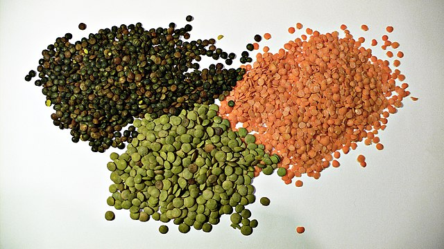

Lentils

It's just lentils.
What you'll need:
- a whole mess of lentils
- a fair amount, dare I say a lot, of water
- salt
What you gotta do:
- Boil that water
- Get all of those lentils in there
- Toss salt in like it's going out of style
- Soak 'em
- Keep soaking
- Know they're done
- Drain those delish little mush kernels
- Plate 'em up and get out the ketchup
Back to Main Page